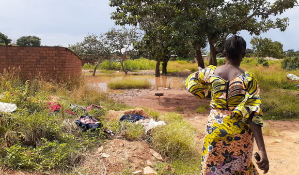

DRC • Cobalt'Staggering' Rise in Women With Reproductive Health Issues Near DRC Cobalt Mines
A Raid and Afrewatch investigation reveals reports of miscarriages, infections and birth defects among women and girls in mining communities. More than half of 144 interviewees raised concerns about reproductive health, linked to contact with contaminated water.
March 2024